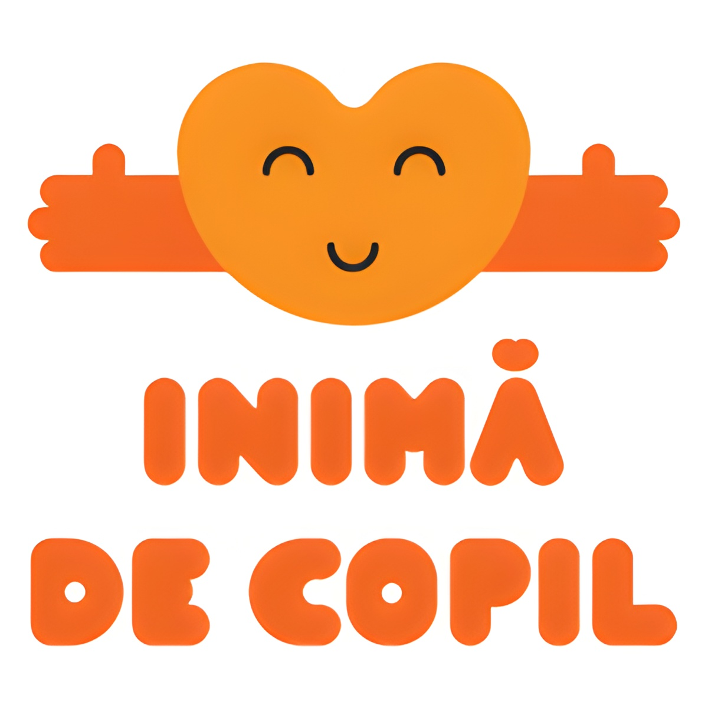
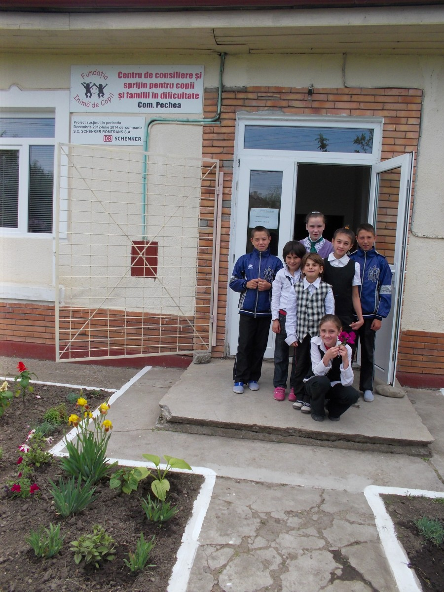
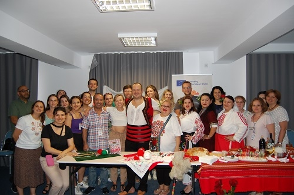

Cine suntem?
Fundația Inimă de Copil a fost înființată în Decembrie 1996 de un mic
grup de prieteni care își doreau să ajute câțiva copii ai străzii și un
grup de 25 de copii HIV abandonați într-un spital din Galați, cu care
viața le intersectase drumurile. Astăzi Fundatia Inima de Copil servește
interesele unui număr mare de copii și tineri. Avem servicii sociale și
de suport pentru copii și familii, ne dorim să aducem cât mai mult în
jurul nostru oameni și comunități. Prin Hotărârea de Guvern 451/2016
Fundația Inimă de Copil a fost recunoscută ca și organizație de
utilitate publică.

Misiunea noastră
Sărăcia nu ar trebui să fie o barieră în calea succesului. Inimă de
Copil ajută copiii, părinții și comunitățile în situație de risc cu
suport medical, educațional, emoțional și economic. Împreună transformăm
inegalitățile în oportunități egale, creând comunități mai puternice,
bazate pe incluziune. Facem acest lucru de 25 de ani în cea mai săracă
zonă a României, sud-estul țării, în Galați, Brăila, Vrancea și Vaslui.

Viziunea noastră
Când familiile prosperă, comunitățile înfloresc. Inima de Copil își
dorește o Românie unde barierele in educație, sănătate, starea de bine
emoțională precum și participarea la activitățile societății civile să
fie depășite, permițând tuturor să își urmeze visele cu aceeași
îndrăzneală și speranță.